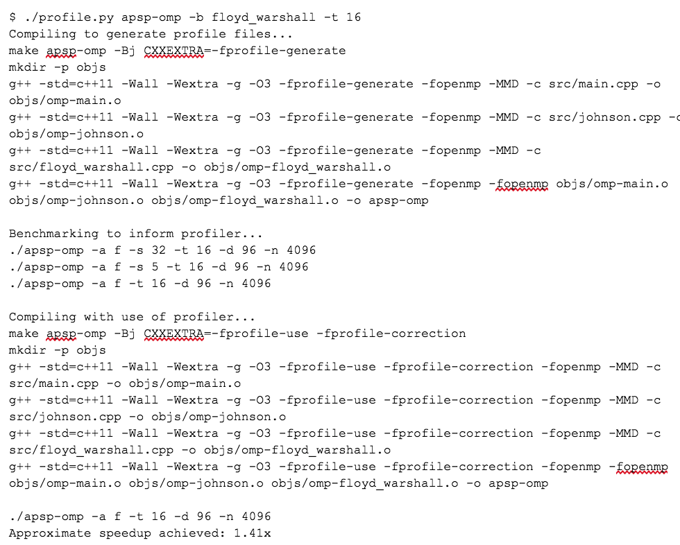

Floyd-Warshall vs Johnson:
Solving All Pairs Shortest Paths in Parallel
15-418 Final Report
Jared Moore and Josh Kalapos
Check out the code for our project here
Summary
We achieved 20x speedup on an 8-core hyperthreaded CPU and 40x speedup on a GTX 1080 GPU solving All Pairs Shortest Paths with Floyd-Warshall's Algorithm. With the same CPU and GPU, we achieved 10x speedup and up to 7x speedup respectively solving the problem with Johnson's Algorithm.
Background
Johnson's Algorithm
In short, Johnson's Algorithm runs Dijkstra's Algorithm with every vertex as a source and collects the shortest distances output by each run. However, the main issue here is that Dijkstra's Algorithm cannot process graphs that contain negative edges. In Johnson's Algorithm, this is solved by first adding an additional vertex that has a zero weight edge to all of the original vertices in the graph. After running Bellman-Ford's Algorithm, we can reweight the edges so that the shortest path is maintained, but all the edges are non-negative. Then, we can run Dijkstra from each source and reweight the distance back to what it is supposed to be. The pseudo code of the described algorithm can be seen below. It requires an edge list representation of a graph as input and outputs an array of shortest distances from any two vertices, indexed as the shortest distance between (u, v) is at output[u][v]. Johnson's Algorithm runs in O(V2log(V) + VE), where V, E is the number of vertices and edges in the graph respectively.
Figure 1: Johnson's Algorithm
In Johnson's Algorithm, there are two important sections that can benefit from parallelism. The first is Bellman Ford's Algorithm, because when it expands from its source vertex for |V| iterations to generate shortest distances, the exploration can be done independently. The second is the running of Dijkstra from every vertex in the graph. Every Dijkstra is done separately, so spawning worker threads to each be assigned different source vertices can be accomplished without worrying about resolving results or synchronization. Other areas such as the reweighting of edges can also be done in parallel. Although spawning worker threads for Johnson's Algorithm is an effective method of parallelizing, from a different perspective of vectorization, there is little opportunity. The reason behind this is that every Dijkstra is meant to run independently with little locality between different source vertices, and parallel code through vectors favors data that is aligned together, so that it can load up lines of memory instead of calling gather and scatter. Additionally, different calls to Dijkstra will take complete at different times, which leads to divergence of the vector lanes. This leads to a very low utilization of the vector lanes, and thus an ineffective Johnson's Algorithm implementation.
Revisiting the spawn worker threads model that OpenMP follows, the divergence of different calls to Dijkstra can be handled better by using dynamic allocation of work. This way the threads can have a better balance among each other so that all threads are getting utilized to their full potential.
Floyd-Warshall's Algorithm
Floyd-Warshall's Algorithm is a different approach to solving the all pairs shortest paths problem. Rather than running Dijkstra's Algorithm on every vertex, Floyd-Warshall's Algorithm uses dynamic programming to construct the solution. The general idea is to - across n iterations, where n is the width and height of the adjacency matrix graph input - pick all of the vertices as intermediates in the shortest paths. We then test if the picked vertex is in the shortest path. If it is an intermediate in the path, we update the distance, else we keep the original distance. Floyd-Warshall's Algorithm takes in an adjacency matrix representation of a graph, and returns a matrix of the shortest distances between any two vertices. The work for this algorithm is O(V3), where Vis the number of vertices in the graph.
Figure 2: Floyd-Warshall's Algorithm
Floyd-Warshall's Algorithm, as it operates on a matrix, bears an interesting similarity to matrix multiplication. As a result, some of the optimizations that are useful for matrix multiplication can also be applied to Floyd-Warshall. One example is splitting the matrix that Floyd-Warshall takes as input into blocks. Like in matrix multiplication, blocking is better for cache locality of the processor, and increases performance by making both reads and writes to memory much faster. By converting the matrix into blocks, there are some modifications that have to be made to the original algorithm.
Figure 3: Blocked Floyd-Warshall
In Blocked Floyd-Warshall, we use a subroutine that processes each its given block. However, the blocks are not all independent and must be processed in three separate phases. First, in the dependent phase, we have to process the kth diagonal block. Then, in the partially dependent phase, we process the kth row and the kth column of blocks. Lastly, in the independent phase, we process the remaining blocks.
Figure 4: Three Phases of Blocked Floyd-Warshall
When making Floyd-Warshall parallel there is one single largest dependency. Unlike matrix multiplication, or matrix transpose, Floyd-Warshall has a loop that cannot have its iterations done independently. This is the outermost “k” loop of the algorithm. This loop cannot be done in parallel because k+1th iteration is dependent on the intermediate paths generated thus far by the previous k iterations. An additional dependency is the ordering of the phases. Phase 1, 2, 3 must be done in order to have correctness. Besides these two dependencies of the algorithm, all of the inner loops can be processed in parallel.
As mentioned before, making Floyd-Warshall blocked increases the locality of the program. Taking advantage of locality is extremely important in this case, as Floyd-Warshall's algorithm is memory bound. Besides the dependencies between iterations and phases, the single mathematical operation is taking the minimum of two loaded values and potentially storing it into a third memory location. Getting quick memory reads and writes generates the most benefit for this application.
With locality, the algorithm becomes extremely data parallel. As data can be confined to small blocks, we can load and operate using SIMD instructions very effectively. This method is utilized in our implementations using ISPC and CUDA. As the inner workings of the phases themselves can be done in parallel, OpenMP is also a strong method of parallelism, as iterations of the loops can be split into chunks amongst threads.
Generating the Graphs
The graphs for Johnson's Algorithm and Floyd-Warshall's Algorithm were generated using three parameters, the number of vertices n, a probability from 0 to 1 p, and a seed value s. With these three inputs, a graph of size n is created and for each possible edge between two vertices, there was a probability p that the edge exists. By starting with the seed value s, we randomly generate all of the edges according the expected density given by the probability p. Using this method allowed us to easily create new graphs revolving around the two biggest factors, number of vertices and number of edges.
For CPU Floyd-Warshall implementation, we had the function copy the graph into the output and operate on that copy, instead of doing it in place. This was similar to the GPU implementation, which is forced to copy the whole graph into the global memory of the GPU before operating. This make sense because we may not want to mutate the original graph. Additionally, these algorithms may require slight modifications to the original graphs, so this is similar to that process.
Approach
Floyd-Warshall's Algorithm on the CPU
From the start, the adjacency matrix/array maps directly to our parallel machine because it is contiguous memory. As mentioned in the background, the outermost loop cannot be parallelized, but the inner phase loops can be. At this point the code was largely unchanged, but now the loops within can each be given even mounts of iterations to process the subroutine on, which does grant speedup relative to the original sequential version.
Figure 5: Parallel Blocked Floyd-Warshall
Beyond the initial approach, all of the subroutine calls of the independent phase do not interact with each other, meaning that the inner loop can be made parallel as well. This was accomplished by assigning more than one thread on the outer loop, of the independent phase, and then splitting the work of the inner loop amongst the assigned extra threads.
At this point, we have not taken advantage of the full potential offered by the CPU. Even though we have been able to use all of the hardware threads of the CPU, the AVX2 vector lanes remain unused. The subroutine floyd, as we pass in three submatrices, offers an opportunity to use ISPC to take full advantage of every core's power. In the function floyd, each iteration, every location is compared with a new potential intermediate distance, which may or may not be stored depending on whether it is shorter or not. These loads and stores happen on continuous memory, so ISPC can easily use a load rather than a gather to fill its vector lanes. In our implementation, we program on a higher abstraction, leaving the specific assignment of lanes to the ISPC compiler, and produce code that has much similarity with the original floyd program, except using the ISPC syntax.

Figure 6: ISPC Floyd-Warshall Subroutine
There were two additional ideas we tried and failed to get further speedup with: creating a transpose of the input for faster cache traversal and utilizing OpenMP's nested parallelism. For the first idea, we were inspired by the benefits matrix multiplication sees from taking advantage of transposing one of the two input arrays. It was feasible to make the transpose matrix because allocating and copying memory was not the algorithm's bottleneck. However, additional writes to keep the transpose matrix updated hurt locality badly, as the cache size was essentially halved. Performance was equivalent at best. For the second idea, we were tempted by the potential to parallelize the third phase. However, this would require splitting the outer loop's thread count by three, just to provide two threads to the inner loop. This was simply much slower (0.7x speedup), due to the spawning of threads required for only a simple loop. It seems the gains for nested parallelism only come for more complex inner loops, where spawning threads is more worthwhile than just to handle a memory bound process.
Floyd-Warshall's Algorithm on the GPU
Similar to the CPU version, the initial adjacency matrix was the desired representation of the graph that mapped the best to the target machine. Though transferring the graph to the GPU was a non-negligible portion of our runtime, after the data was transferred, we took to mapping our graph to the many lightweight threads available in the GPU.
Our first approach took a simple route, in order for us to get a basic benchmark for what the GPU was capable of with a quickly designed implementation. This implementation was an unblocked Floyd-Warshall, where our host function launched as many BLOCK_DIM x BLOCK_DIM blocks as necessary to cover the graph, and then each block's threads work on single values before returning. This requires n kernel launches, as, once again, Floyd-Warshall has an outer dependent loop that must be done iteratively. There were several disadvantages to this approach. Foremost, all accesses to memory were to global memory, which, following the memory model of a GPU, is extremely slow. This implementation makes no use of the shared memory of the blocks, and, as we previously stated that Floyd-Warshall is a memory bound algorithm, this approach does not yet reach CUDA's full potential.

Figure 7: GPU Memory Hierarchy
Figure 8: First Approach CUDA Kernel
From the GPU memory hierarchy, we know that each block has a small amount of shared memory, which any thread within the block can access very quickly. This leads to the second approach the Floyd-Warshall on the GPU that uses the blocking technique similar to the CPU implementation. Though the purpose is similar, improving locality, the GPU implementation has some differences because its memory hierarchy differs from that of a CPU's.
Like the CPU blocked, the inner loops have to be accomplished in three phases. Each phase has blocks that have the same submatrix dependencies that the CPU implementation has. However, while the CPU at this point exhibits better locality because the loads now remain in the cache for longer, in CUDA we have to explicitly load our graph from global memory into shared memory. This is accomplished by each thread in the block loading one element of each submatrix into shared memory. Then, in the subroutine that executes for BLOCK_DIM iterations, each thread handles one position in the submatrix, and syncs with the other threads in the block at every iteration to make sure we follow the “k” loops dependencies. After the calculation is finished we copy our shared memory changes back into global memory.
The advantages of this approach are that, as shared memory (~1.7 TB/s) is much faster than global memory (~150 GB/s). A memory bound application like Floyd-Warshall benefits greatly when it can access memory at a much higher rate. As a result, we were able to effectively use the GPU in our machine and obtain excellent performance.
Figure 9: Phase1 Floyd Warshall CUDA Block Kernel
Figure 9 shows the simplest kernel of the blocked implementation, phase 1, which only processes the diagonal blocks. Still, this kernel gets the main idea across of transferring to fast shared memory, calculating, then transferring back global memory for the rest of the program to observe.
Johnson's Algorithm on the CPU
While Floyd-Warshall we wanted a adjacency matrix representation of our input graph, with Johnson's a edge list input offers more advantages, like retrieving a vertex's neighbors in constant time, which is not possible with an adjacency matrix. As we discussed on the background of Johnson's Algorithm, two large opportunities for parallelism are the call to a Bellman-Ford subroutine, and the independent calls to Dijkstra from each vertex.
The purpose of Bellman-Ford in Johnson's Algorithm is to provide reweights distances to eliminate negative edges. Within Bellman-Ford there are three parts, the initialization of the distances, |V|iterations to create the distances, and the checking for negative cycles. The first and third steps can easily made parallel using OpenMP, but the second step we have a dependency on the iterations from the source, so we have to only use OpenMP on the inner loop. Making Bellman-Ford parallel using OpenMP does not require much additional complexity, and as the operations are well distributed among worker threads.
The following reweighting of all the edges as a result of Bellman-Ford can be done in parallel, and we create a new graph with these new edges. This leads to the most costly part of the algorithm, running Dijkstra from each vertex. In our parallel implementation we make use of Boost Graph Library's dijkstra_shortest_paths as a subroutine. Our outer loop uses OpenMP to distribute these calls to dijkstra among all the threads we have available, and then after getting the distance map, we reweight the distances with the information we got from Bellman-Ford.
Figure 10: OpenMP and Dijkstra
In this case, it was beneficial to tell OpenMP to dynamically schedule the assignment of work to threads, since the workload is difficult to balance statically.
We had failure adding parallelism to Johnson's on one main front: adding ISPC or any kind of vectorization. For one, since the majority of our work is done inside Dijkstra's Algorithm and the loop surrounding it (Figure 10), our only opportunity for ISPC speedup was something outside the Dijkstra's. We targeted to array write immediately following it, but failed to get good results. The ISPC code can be seen in Figure 11. This failure also makes it clear why we had difficult translating this code to a efficient CUDA implementation.
Figure 11: Attempt to vector array writes for
The code resulting from this addition was actually not any faster than the code before (1x speedup). We can theorize why with two reasons: the original array writes were done in an incredibly cache efficient way already, as cache lines should not see false sharing and memory is contiguous, and the code to perform it was inline. Using ISPC, we have to perform a function call to access the ISPC code. For this use case, the overhead of the function call likely cancelled any SIMD benefits. Using an LLVM backed compiler like Clang allows ISPC to truly inline the code, but we opted to stick with GCC.
Johnson's Algorithm on the GPU
Similar to the vectorization of Johnson's on the CPU with ISPC, Johnson's Algorithm did not benefit well from a CUDA implementation. Certain tasks like reweighting edges, or, in Bellman-Ford, initializing distances, were not worth sending to the GPU to accomplish. This is due to initialization having extremely low arithmetic intensity, and copying data back and forth from the GPU to the CPU is costly, when it is faster for the CPU to do it by itself. Additionally, while Floyd-Warshall's Algorithm beared a strong resemblance to matrix multiplication, which explains its strong mapping to the GPU's hardware, Johnson's Algorithm is ineffective with a adjacency matrix representation because of Dijkstra needing to quickly retrieve neighbors. This leads to a representation of a graph using an edge list, which does not have the same vectorization capabilities. Additionally, as each dijkstra run is independent from the other, there is little shared information between threads, so it is difficult to consider what should be placed in shared memory over global memory, as shared memory is far to small to fit the whole graph, and cannot be dynamically resized to contain different amounts of edges. As a result of this divergence as well is that it is difficult to avoid the gather and scatter operations as different runs of dijkstra will be observing completely different parts of the graph. The low vectorization capability of Johnson's Algorithm greatly reduces its capabilities on a GPU.
Figure 12: Example of Parallelizable Code Not Worth Sending to GPU
Obtaining Overall Speedup with GCC (Profile Guided Optimizations)
Late into our development, we wanted to see how much GCC's built-in Profile Guided Optimization would help our algorithms. To use this, one must compile with special flags, run the executable several times in what is considered a normal use case, and then recompile again. The script we made to do this, as described in the Experiment Setup section below, reports speedup values from the optimization. For the sequential and OpenMP versions of this code, the programs would execute with about 1.2x to 1.5x speedup compared to their initial counterparts. This was considered free speedup, and we almost always used this sequential version as our benchmark baseline.
The Profile Guided Optimization did not benefit the ISPC executables or the CUDA executables. It is likely that this is because the compiler had less insight on what was happening when the program ran. It instruments a profiling companion for each executable file, but obviously cannot for the object files made by the ISPC compiler or the NVCC compiler. Since the heavy lifting for the algorithms are done with this code outside of GCC's compilation, it is unfortunately not possible to get speedup.
Results
In our collection of data we took into account many different aspects of effectiveness of each implementation. For every implementation, we could judge their runtime given a certain sized graph. Additionally, for our OpenMP approach, we can observe how the program scales as it is given more threads to process the graph in parallel. Another interesting study we did was how well giving adding more threads scaled on different machines, specifically the GHC and Andrew Machines.
Experiment Setup
As described in the background, we generate graphs through a random process based on the expected density of edges given graph of size n vertices. Throughout our study when it was necessary to check correctness of a solution, we ran and stored reference solutions created by the sequential version, which then could be used to compare against the results of other implementations. There solutions would be cached to a file, as to save time when checking the correctness in the future. This proved to be overkill, as the files could get large and smaller graphs work fine just for regression testing.
For timing we measured with std::chrono::high_resolution_clock (wall time). Our timing for the overall run of the algorithm only includes the call to the APSP solving function, and does not include the creation of the graph. This result makes sense because often input graphs were reused and the runtime of the algorithm itself should be the only aspect judged.
Different variables like number of vertices, probability of an edge (only affects Johnson's), block size for Floyd-Warshall blocked, thread count, provided many different bits of data that could be compared.
We benchmarked our code using a Python script. It compares two executables, labeled seq and par, that run a list of pre-configured values for the vertex count n, edge existence probability p, thread count t, and a seed value s. The algorithm used was fixed for a given benchmark. The block size for Floyd-Warshall was also fixed. Optionally, when t was the only variable changing, the sequential algorithm runtime was cached to allow for quicker benchmarks. The runtime was calculated by performing regex on the executable's output, which worked well because we could rely on the standard library's timing mechanism and precisely control what part of the code we wanted the time of in the C++ code. We had several predefined benchmarks, such as one that showed “thread scale”, one that was long running and “serious”, and one that would demonstrate different graph densities for Johnson's Algorithm. See Appendix 1 for the script's arguments. Figure 13 shows a sample run of the benchmark.
Figure 13: Sample run our benchmarking tool, showing thread scaling
Another part of our experiment involved taking advantage of GCC's profile guided optimization. To do this, we created a Python script which worked around calling make, then, similar to the benchmarking program, ran a few configurable executions of the select executable to optimize, and finally compiled the results once more. The optimized executable was then run again to give an immediate reference for how much speedup was achieved. A sample run of this script can be seen at Appendix 2.
Floyd-Warshall Results
CPU Results - OpenMP and ISPC
On the CPU we had three approaches to parallelism, OpenMP, ISPC and a hybrid of both.
Our first study was collecting speedup as we increased the number of threads given to the program. This was tested on two different machines, Andrew Unix, and GHC. As a result of their varying hardware, we observed better and worse thread scaling as displayed in Figure 14.
Figure 14: Floyd-Warshall OpenMP Speedup on GHC, Andrew
A specific consideration to have with these results is that GHC machines have 8 physical cores, though they can run 16 threads through hyperthreading. When we provide more than 8 threads to the OpenMP implementation on GHC, we can see that we lose speedup, meaning that the hyperthreading is potentially ineffective in our program. This could likely be because of our reliance on the cache of each processor, and threads on the same core share the same cache, but they do not share the same blocks that they are processing. This would lead to more cache evictions, and would hurt our memory bound Floyd-Warshall. The speedup from the Andrew Machines supports this idea, as Andrew machines have 10 cores per socket and two sockets, resulting in 20 cores. Our data reflects this as we continue to obtain speedup from the Andrew machines up until 11 threads, which is a little over the number of cores in one socket.
The two different ISPC approaches is that one of them uses OpenMP to split workers to handle thread level parallelism, while ISPC takes control of each processor's vector lanes. We tested the effectiveness of just a single threaded ISPC, and in addition to the multi-threaded ISPC, compared it to our baseline sequential runs. From figure 15, as the number of vertices increases, we can observe a slight increase in speedup from ISPC-OMP, likely due to more efficient parallel work getting done during the independent phase of Floyd-Warshall. This is less visible with ISPC-Seq, which is likely because having more vertices doesn't mean much to the work distribution of a single thread.
Figure 15: Scaling with Increasing Vertices
Figure 16: Thread Scaling with ISPC Open
Figure 16 displays ISPC thread scaling on the GHC machines, with linear speedup and OpenMP speedup as a reference. Recall that GHC has 8 physical cores, and hyperthreading does not increase the amount of AVX2 lanes available on a core. This can offer an explanation on the limitations of scaling speedup, as speedup plateaus after 8 threads. There is still benefit to having more threads as we can interleave memory loads with different threads working on execution, but having more than 8 threads no longer benefits the use of AVX2.
Overall, while OpenMP is a mostly effective parallel model for implementing Floyd-Warshall on the CPU, neglecting the vectorization of Floyd-Warshall would be a mistake, as ISPC can grant a better and faster use of the machine.
GPU Results - CUDA
On the GHC machine there is a GeForce GTX 1080 GPU with 8 GB of RAM. Our results when running a CUDA implementation studied how much time it takes to execute different sized graphs relative to the sequential version. Andrew machines are not equipped with a GPU so testing was done on GHC only. We're showing comparisons against the profiler optimized sequential code and the regular sequential code because the profiler optimizations are not available to CUDA. Although we are discussing GPU results, the effectiveness of Profile Guided Optimization (PGO) on the CPU code was large and brought extra competitiveness against the GPU.
Figure 17: CUDA Speedup compared to Sequential with PGO and without PGO
From figure 17 we can see that CUDA, despite PGO optimizations, very much outperforms the sequential implementation, with up to 37x speedup on 6144 vertices. Against the sequential version without PGO, we get up to 48x speedup on 6144 vertices. One of the largest bottlenecks of running Floyd-Warshall on CUDA was copying the graph from the CPU to the GPU global memory. Only so much memory can be sent at a time, and it is an unavoidable process if we want to process data on the GPU. Using NVPROF to study the runtime of specific parts of Floyd-Warshall on CUDA. Running on 2048 nodes, cudaMemcpy represented 69.51% of the total time spent on API calls, and 29.77% gets spent on cudaMalloc. With 4096 nodes, cudaMemcpy represents 95.27% and cudaMalloc represents 4.6%. Both cudaMemcpy and cudaMalloc increase in total time as the size of the graph increases, as we have to allocate more memory on the GPU and also transfer more memory to the GPU. While on the GPU, most time is spent in the Floyd-Warshall blocked phase3 kernel, which makes sense because it launches the more blocks than the other two kernel phases.
Floyd-Warshall Overall Result
Through different parallel schemes, we have studied their effectiveness in implementing Floyd-Warshall to run as fast as it can on different machines. Figure 18 shows the execution time of all of the implementations as the number of vertices increases. Despite CUDA's large costs of sending data to the GPU, it still is the most effective solution to Floyd-Warshall. OpenMPand ISPC with OpenMP were run with 16 threads, and ISPC with OpenMP is pretty effective relative to CUDA, when considering the pure computing power of a GPU relative to a CPU's lesser amount of vector lanes.
Figure 18: Overall Results of Floyd-Warshall With Different Parallel Schemes
Johnson's Algorithm Results
CPU Results - OpenMP
The final Johnson's implementation only makes use of OpenMP, and PGO, as a vectorizing approach was tried but soon revealed itself to be ineffective. In figure 19, we can observe the difference between running from 1 to 16 threads on the GHC and Andrew machines. The results were different from Floyd-Warshall's. While Floyd-Warshall's algorithm did not benefit from OpenMP after more than 8 threads were launched, Johnson's Algorithm obtains better speedup relative to its sequential implementation. If we recall that the bottleneck for Floyd-Warshall was likely caused by hyperthreading interfering with the cache, Johnson's Algorithm, when it runs all its Dijkstra's, should be more arithmetically intense, so the cache has less contention and we receive more benefits of parallelism.
Figure 19: Johnson OpenMP Speedup on GHC and Andrew Machines (p = 0.01, n = 2048)
Additionally, though Johnson's Algorithm cannot benefit from ISPC like Floyd-Warshall and may run slower in many cases as a result, Johnson's Algorithm benefits from a smaller p, as dijkstra has to search less edges. Floyd-Warshall's runtime depends only on the number of vertices in the graph and experiences no change in performance. So when p is low enough, Johnson's may even outperform Floyd-Warshall. Though this is not an aspect of the parallelism of Johnson's, it is still important to consider when comparing the two solutions to the All Pairs Shortest Paths Problem.
Breaking down the algorithm into its components, the time spent by the algorithm can be divided into two distinct regions: Bellman-Ford and Dijkstra's Algorithm. There were other steps such as reweighting the edges, but Bellman-Ford and Dijkstra dominated most of the compute time. Between the two, the process of running Dijkstra from each vertex in the graph took much more time than the Bellman-Ford execution from a single added source vertex. Even when the work of all the Dijkstra calls was split amongst the worker threads from OpenMP, Dijkstra remained 80% of the total runtime. This meant that further gains would only be seen if we could improve the runtime of Dijkstra, which would be a large project on its own.
GPU Results - CUDA
As we discussed in the background on the limit to vectorizing CUDA code, we still made an implementation to provide as data for its inefficiency relative to CPU based solutions. A very distinct disadvantage is that when running Dijkstra from every vertex in a graph, there is not a priority queue available to each thread to store its frontier vertices. A priority queue is difficult for each thread to have because private memory is small, and threads cannot share a priority queue due to divergence of their operations. This limitation forces a slower lightest edge search along vertices that takes longer asymptotically. Thus CUDA benefits less when p is decreased because more of the implementation is dependent on the number of vertices.
Figure 20: Johnson p = 0.01
Figure 21: Johnson p = 0.1
This, along with SIMD divergence and poor vectorization, limits Johnson CUDA greatly. These effects can be observed in Figure 20 and Figure 21. With a small p=0.1, CUDA still outperforms the sequential version, but gets outperformed by the OpenMP implementation on the CPU. However, when p is reduced even further to 0.01, CUDA performs worse than the sequential version. Figure 22 displays the relationship between p and Johnson's performance on 1024 vertices. In a fully connected graph (p = 1), CUDA performs just as well as OpenMP, but, as p decreases, OpenMP and the sequential version come to perform better than CUDA.
Figure 22: Effectiveness of Johnson Parallel with varying p
Conclusion
Taking an algorithm and mapping it to a parallel system provides varying levels of success depending on the algorithm itself and the parallel model. From our experimentation with Floyd-Warshall's Algorithm and Johnson's Algorithm, and trying to implement them using software and hardware approaches to parallelism, we have learned that because Floyd-Warshall's Algorithm lends itself to parallelism, it significantly outperforms Johnson's Algorithm in the modern parallel computing environment. Between our different implementations of Floyd-Warshall's Algorithm, the CUDA approach, which can be considered the most extremely data parallel, performed the best. This was not the case for Johnson's Algorithm. Although Johnson's Algorithm has a better asymptotic complexity than Floyd-Warshall's, O(V2log(V) + EV)versus O(V3) respectfully, Floyd-Warshall's ability to take advantage of the full power of the provided hardware leads to its dominance. In the end, experimentation with the two different algorithms for solving All Pairs Shortest Paths revealed that the greatest parallel performance comes from the strongest mapping to the given parallel hardware.
References
- http://www.cs.cmu.edu/afs/cs.cmu.edu/academic/class/15451-f17/www/lectures/lec13-dp2.pdf
- https://en.wikipedia.org/wiki/Floyd%E2%80%93Warshall_algorithm
- https://en.wikipedia.org/wiki/Johnson%27s_algorithm
- https://stackoverflow.com/questions/504823/has-anyone-actually-implemented-a-fibonacci-he Ap-efficiently
- Tang, Peiyi. "Rapid development of parallel blocked all-pairs shortest paths code for multi-core computers."" IEEE SOUTHEASTCON 2014 (2014): 1-7.
- https://www.nvidia.com/en-us/geforce/products/10series/geforce-gtx-1080/
- https://www.geforce.com/hardware/desktop-gpus/geforce-gtx-titan-x/specifications
- https://www.boost.org/doc/libs/1_66_0/doc/html/boost/heap/fibonacci_heap.html
- P. Samer, A. H. Sampaio, A. Milanes and S. Urrutia, "Designing a Multicore Graph Library," 2012 IEEE 10th International Symposium on Parallel and Distributed Processing with Applications, Leganes, 2012, pp. 721-728.
- Tastan, Oguzhan & Can Eryuksel, Ogul & Temizel, Alptekin. (2017). Accelerating Johnson's All-Pairs Shortest Paths Algorithm on GPU.
- E. Solomonik, A. Buluc and J. Demmel, "Minimizing Communication in All-Pairs Shortest Paths," 2013 IEEE 27th International Symposium on Parallel and Distributed Processing, Boston, MA, 2013, pp. 548-559.
- T. Srinivasan, R. Balakrishnan, S. A. Gangadharan and V. Hayawardh, "A scalable parallelization of all-pairs shortest path algorithm for a high performance cluster environment," 2007 International Conference on Parallel and Distributed Systems, Hsinchu, 2007, pp. 1-8.
- https://engineering.purdue.edu/~eigenman/ECE563/ProjectPresentations/ParallelAll-PointsShortestPaths.pdf
Appendix
Appendix 1: The possible arguments for our benchmarking script, benchmark.py
Appendix 2: Output of profile.py, our script to take advantage of GCC’s profile guided optimization